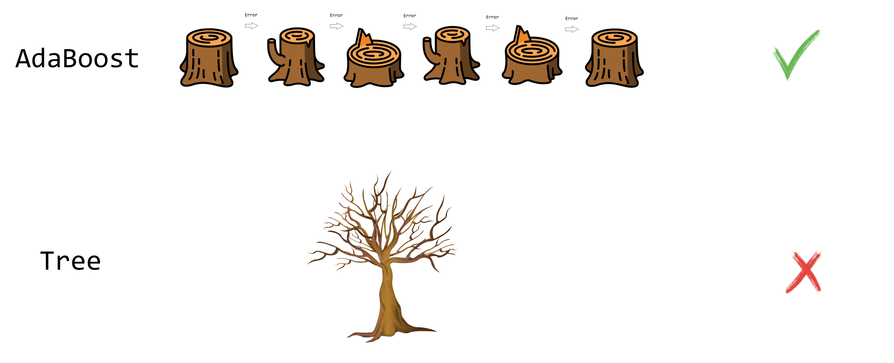

6 AdaBoost
AdaBoost (adaptive boosting) fue propuesto por Freund and Schapire (1995) y consiste en crear varios predictores sencillos en secuencia, de tal manera que el segundo ajuste bien lo que el primero no ajustó, que el tercero ajuste lo que el segundo no pudo ajustar y así sucesivamente. En la siguiente figura se muestra una ilustración de lo que es AdaBoost.

Explicación sencilla de AdaBoost
- Entrene un clasificador.
- Use el clasificador.
- Identifique los casos que fueron mal clasificados.
- Construya un nuevo clasificador que clasifique mejor los casos mal clasificados del punto anterior.
- Repita los pasos 2 a 4 varias veces.
- Asígnele un peso a cada clasificador y júntelos para obtener un clasificador con mejor desempeño.
Explicación detallada de AdaBoost
- Inicie con un conjunto de entrenamiento \((X, Y)\) con \(m\) observaciones denotadas como \((x_1, y_1), \ldots, (x_m, y_m)\) de tal manera que \(x_i \in R^p\). Los valores de \(y\) deben ser -1 o 1 para aplicar el método.
- Inicie con la distribución discreta \(D_1(i)=1/m\) que indica el peso de la observación \(i\) en la iteración \(1\).
- Para \(t=1, \ldots, T\).
- Construya un clasificador \(h_t\) definido así: \(h_t : X \rightarrow \{-1, 1 \}\).
- Calcule el error asociado \(\epsilon_t\) al clasificador \(\epsilon_t= \sum_{i=1}^m D_t(i) \times \delta_i\), donde \(\delta_i=0\) si \(h_t(x_i)=y_i\), es decir, si fue correcta la clasificación; caso contrario es \(\delta_i=1\).
- Calcule la nueva distribución \(D_{t+1}(i)=D_{t}(i) \times F_i / Z_t\), donde:
- \(F_i=\exp(-\alpha_t)\) si la clasificación fue correcta, es decir si \(h_t(x_i) = y_i\).
- \(F_i=\exp(\alpha_t)\) si la clasificación fue incorrecta, es decir si \(h_t(x_i) \neq y_i\).
- \(\alpha_t=\frac{1}{2} \log \left( \frac{1-\epsilon_t}{\epsilon_t} \right)\).
- \(Z_t\) es una constante de normalización de tal manera que \(\sum_{i=1}^m D_t(i)=1\). Usualmente es \(\sum D_{t}(i) \times F_i\).
- Construya el clasificador final \(H_{final}\) como el promedio ponderado de los \(t\) clasificadores \(h_t\), usando \(H_{final}=sign(\sum_t \alpha_t h_t(x))\).
Ejemplo
En este ejemplo se ilustra la forma de aplicar AdaBoost a un conjunto de datos bivariados para clasificar en dos clases: -1 y +1.
Figure 6.1: Datos originales.
En la siguiente figura se muestran 3 clasificadores (\(h_1\), \(h_2\) y \(h_3\)) sencillos o árboles de profundidad uno (tocones), que fueron creados de forma secuencial. Al observar \(h1\), se nota que él clasificó mal los + encerrados en círculos. Por esa razón, en la siguiente iteración esas observaciones mal clasificadas tuvieron un mayor peso o importancia en el nuevo clasificador \(h_2\), por eso es que esos símbolos + aparecen más grandes en la segunda figura. Al mirar el clasificador \(h_2\) se observa que logró clasificar bien esos + grandes, sin embargo, él clasificó mal los - que están encerrados en círculos. Por esa razón, en la siguiente iteración esas observaciones mal clasificadas tuvieron un mayor peso o importancia en el nuevo clasificador \(h_3\), por eso es que esos símbolos - aparecen más grandes en la tercera figura. El clasificador \(h_3\) logra clasificar mejor esos -.
Figure 6.2: Clasificadores.
El clasificador final (\(h_{final}\)) se construye como una ponderación de los clasificadores sencillos (\(h_1\), \(h_2\) y \(h_3\)) como se muestra a continuación.
Figure 6.3: Obtención clasificador final.
Los valores de \(\alpha_t\) son las ponderaciones que aparecen en la explicación detallada del método.
Ejemplo
En este ejemplo vamos a usar la base de datos kyphosis del paquete rpart de Therneau and Atkinson (2023). A continuación las primeras líneas de la base de datos.
## Kyphosis Age Number Start
## 1 absent 71 3 5
## 2 absent 158 3 14
## 3 present 128 4 5
## 4 absent 2 5 1
## 5 absent 1 4 15
## 6 absent 1 2 16El objetivo es crear un clasificador que use la información de Age, Number y Start para predecir el tipo de deformación kyphosis (absent or present). Como vamos a aplicar el AdaBoost manualmente debemos crear la variable respuesta con valores de -1 y 1 así:
Vamos a crear primero un modelo de referencia mod0 que será un árbol tradicional.
mod0 <- rpart(y ~ Age + Number + Start, data=kyphosis, method="class")
y0 <- predict(mod0, type="class")
tabla0 <- table(y0, kyphosis$y)
accu_mod0 <- sum(diag(tabla0)) / sum(tabla0)
accu_mod0 # Tasa de clasificacion correcta## [1] 0.8395062De la salida anterior podemos ver que el modelo mod0 logró clasificar correctamente 0.8395062.
En el siguiente código está la implementación manual de AdaBoost, en este código se usan 20 iteraciones para crear 20 tocones (stumps) que unidos nos permitirán crear el segundo clasificador.
T <- 20 # numero de iteraciones
m <- nrow(kyphosis)
Dt <- rep(1/m, m) # D1
alphas <- numeric(T) # Para almacenar alpha
y_hats <- matrix(NA, ncol=T, nrow=m) # Para almacenar la predicciones
for (i in 1:T) {
mod <- rpart(y ~ Age + Number + Start, weights=Dt, data=kyphosis,
method="class", control=rpart.control(maxdepth = 1))
y_hat <- predict(mod, type="class")
error <- ifelse(y_hat == kyphosis$y, 0, 1) # 1=error, 0=ok
epsilon_t <- sum(error * Dt)
alpha_t <- 0.5 * log((1-epsilon_t)/epsilon_t)
Fi <- ifelse(y_hat == kyphosis$y, exp(-alpha_t), exp(alpha_t))
Dt <- Dt * Fi
Dt <- Dt / sum(Dt)
alphas[i] <- alpha_t
y_hats[, i] <- ifelse(y_hat == "-1", -1, 1)
}Para obtener las estimaciones con los 20 tocones se usa el siguiente código.
y_final <- c(sign(y_hats %*% matrix(alphas, ncol=1)))
tabla_final <- table(y_final, kyphosis$y)
accu_boost_manual <- sum(diag(tabla_final)) / sum(tabla_final)
accu_boost_manual # Tasa de clasificacion correcta## [1] 0.8888889Por último vamos a usar la función boosting del paquete adabag propuesto por Alfaro et al. (2023) para aplicar AdaBoost de forma automática.
library(adabag)
adaboost <- boosting(Kyphosis ~ Age + Number + Start,
coeflearn="Freund",
data=kyphosis, mfinal=20)
yhat_adaboost <- predict(adaboost, newdata=kyphosis)$class
tabla_adaboost <- table(yhat_adaboost, kyphosis$Kyphosis)
accu_boost_autom <- sum(diag(tabla_adaboost)) / sum(tabla_adaboost)
accu_boost_autom # Tasa de clasificacion correcta## [1] 1Abajo se muestra nuevamente el código para calcular las tres tasas de clasificación correcta para el modelo de referencia, el AdaBoost manual y el AdaBoost automático.
| Modelo | Tasa de clasificación correcta |
|---|---|
Árbol tradicional (mod0) |
0.8395062 |
| AdaBoost manual | 0.8888889 |
| AdaBoost automático | 1 |
De la salida anterior se observa que el árbol tradicional (mod0) tiene la menor tasa de clasificación correcta mientras que el modelo entrenado con boosting tiene la tasa de clasificación correcta mayor.
Ejemplo
En este ejemplo vamos a mostrar como usar el paquete adabag de Alfaro et al. (2023) para aplicar AdaBoost.
Como ejemplo vamos a usar la base de datos iris en la cual se tienen 4 variables que caracterizan las flores de tres especies. En la figura de abajo se muestran las tres especies y las cuatro variables.
Figure 6.4: Tipos de especies y variables en la base de datos iris.
El objetivo de este ejemplo es crear un modelo para predecir la especie de una flor en función de las variables Sepal.Length y Sepal.Width.
Primero vamos a crear un árbol de clasificación usando el paquete rpart de Therneau and Atkinson (2023), este modelo servirá como modelo de referencia.
library(rpart)
mod1 <- rpart(Species ~ Sepal.Length + Sepal.Width, data=iris)
yhat1 <- predict(mod1, type="class")Ahora vamos a aplicar AdaBoost.
library(adabag)
mod2 <- boosting(Species ~ Sepal.Length + Sepal.Width,
data=iris, mfinal=10)
yhat2 <- predict(mod2, newdata=iris)$classEn los objetos yhat1 y yhat2 están las predicciones y con ellas vamos a formar las matrices de confusión para cada modelo.
## prediccion
## real setosa versicolor virginica
## setosa 49 1 0
## versicolor 3 31 16
## virginica 0 11 39## prediccion
## real setosa versicolor virginica
## setosa 50 0 0
## versicolor 1 38 11
## virginica 0 11 39Ahora vamos a calcular la tasa de clasificación correcta para cada una de las matrices anteriores.
## [1] 0.7933333## [1] 0.8466667De la anterior salida se observa que la tasa de clasificación correcta con un árbol tradicional es 79.33% mientras que con AdaBoost es 84.67%.